Rey Mindu · East Sikkim
Rey Mindu is already a mindful village. We are not building one.
A Lepcha village in East Sikkim, between Rumtek and Lingdum monasteries. A bongthing in his seventies still chants here. A monastery, rebuilt three times over a century, stands where an old clay stupa once was. 108 white flags multiply mantra in the wind for the dead. A buckwheat roll is served with millet beer to a guest who has walked up from the ridge.
These are not raw materials for a project. They are the project, complete in themselves.
What the village needs is not a vision imposed from outside - but a protective architecture that lets what is already here continue, while finding the right channels for it to be expressed.
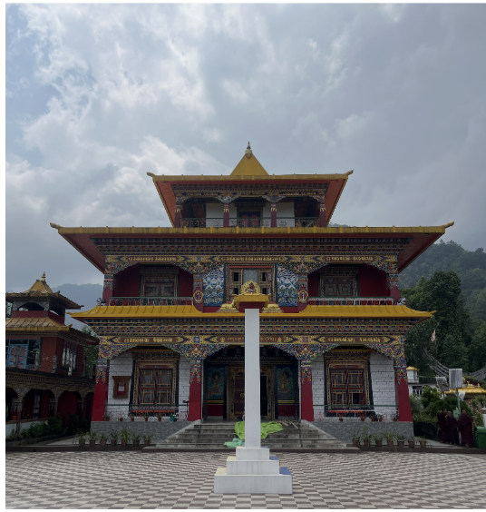
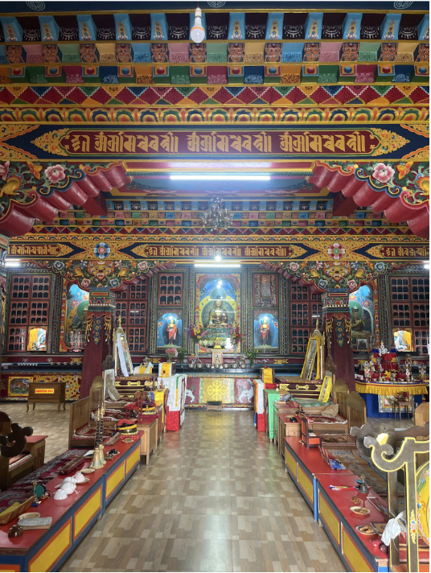
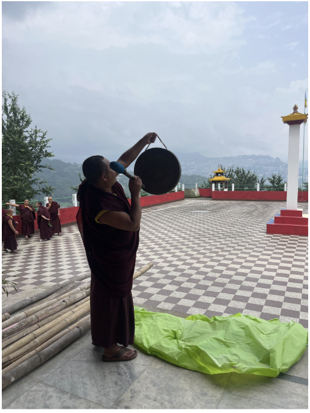
The Village

The village holds two zones - the Village Core, and the Riverside Area about 1.3 km away.
Chapter II
The Common Thread
Combine seven pillars into one offering, with a single thread running through all of it: mental well-being, Vajrayana Buddhism, Lepcha culture, art, music and sound, local sensitivities, and local experiences. Not heavy. Not clinical. A place that restores you.
The thread is mental well-being. But Rey Mindu already owns the words for it.
The one who looks and the thing looked at are not two.
The viewer is also seen; blessing passes through the exchange.
The Lepcha word in Pang Lhabsol - to witness the sacred, not merely observe it.
Spectatorship is one-way, and it consumes. Darshan, thongdrol, and pang are two-way, and they transmit. A guest who arrives with these is a witness - not a tourist. That is the whole difference.
Chapter III
How Every Space Carries Two Roots
Every space here means two things at once.
The breath that lengthened. The hands that remembered. The child who became a child again.
The cosmology, the ceremony, the knowledge carried across generations - arranged so the village teaches it through how it is lived.
The two hold together. And the deep root is never lectured to a guest - it is arranged, so the village teaches it through how it is lived. The orchard's one rule teaches the Lepcha relationship with land without a word. Sitting at the cremation ground teaches impermanence without a dharma talk.
Any wellness resort can build a breaking room. Only Rey Mindu can build one where the reason why you break things already lives in the monastery 200 metres away.
Chapter IV
The Arc of Expression
The active spaces form an arc - from the most physical release to the most communal gathering. A guest can move through all three in a day. They stand in counterpoint to the still, sacred spaces. Holding both poles at once is the non-dual architecture, made into a village.
The Unbecoming Space
You are carrying something heavy - anger, grief, jealousy, shame. These are real. This space gives them a form to meet. Name what you are carrying. Bring it here. Leave it.
The five Vajrayana poisons - ignorance, attachment, aversion, pride, jealousy - are not foreign invaders to be suppressed. They are the raw material of awakening: the poison is also the medicine, recognised and transformed. The bongthing's work with Mung spirits follows the same logic - the difficult is not destroyed, but appeased and transformed.
Anger and peace are not two.
The Making Space
Work with your hands. Throw paint, shape clay, weave. The thinking mind quiets. You become the making. A space to become a child again.
Dōgen's cook found awakening in the kitchen, not the meditation hall. Marpa built his tower stone by stone - the labour was the transmission. The Lepcha weaver chants mantras for the named owner while weaving the Sumok-thyaktuk hat. Making and practice are not two.
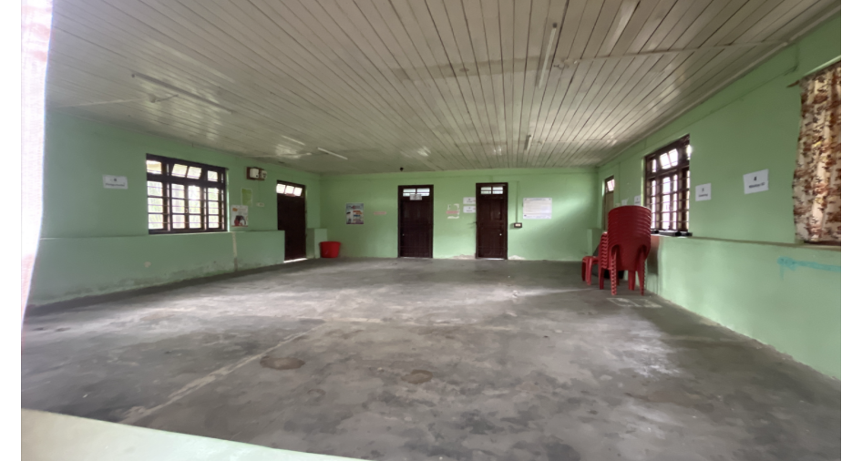
The Gathering Hall
A 12-room building - from what it is now, to what it can become.
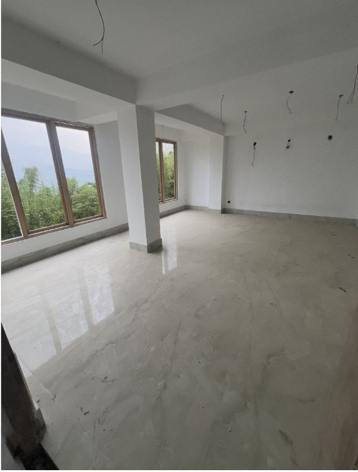
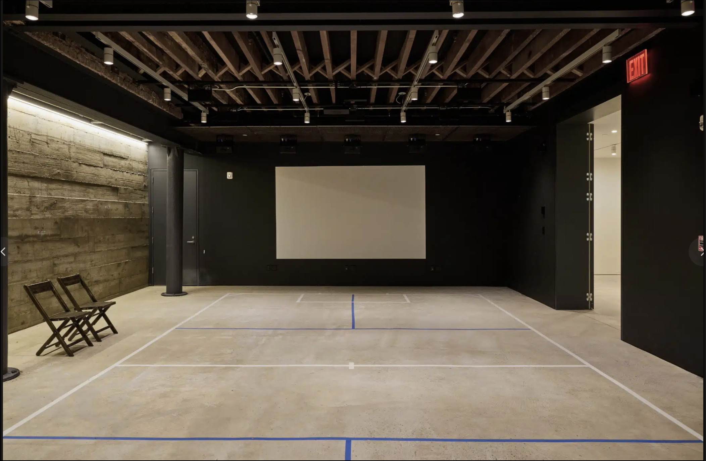
Come together. Listen, play, speak, be witnessed. The open mic where you finally sing the thing you've carried. The drum circle where you stop thinking and start feeling.
Ritual music at the monastery is chöpa - offering, not entertainment. Cham is moving meditation. Performer and witness are not two. So the hall has no fixed stage - the architecture refuses the idea of one person performing at others.
An artist in residence, working alone.
Their work meeting the village's own musicians and weavers.
Open mic, concert, dialogue, dinner.
The one condition of the residency: the work must leave something behind. Not a retreat that uses the village as backdrop - a relationship where something flows both ways.
Chapter V
The Sacred & Still Layer
These spaces are protected, not programmed. They make plain what kind of place this is.
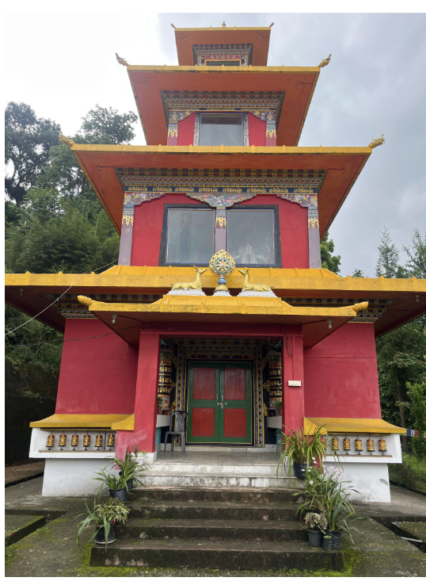
The Monastery & Meditation Room
Visitors attend as witnesses, in thongdrol mode. The monks' practice always takes precedence over any documentation. Supervised sitting happens in the meditation room, with the resident Lama's blessing.
The Tantric practices are sensitive and kept - surface engagement only, never claiming deep access.
The Cremation Ground
The most direct expression of non-dual practice the village has, where body and mountain, samsara and nirvana, are recognised as not two. Visitors may sit and contemplate when no ceremony is happening, and do nothing else. Never photographed as scenery.
Most mindful travel avoids death. Rey Mindu cannot, and should not - it is the most honest thing the village offers.
Kaa Den-Mo-Lee
A 300+ year old traditional Lepcha house, to be restored with the Culture Department as conservation, not renovation. Not a vernacular style but a cosmological form.
Chapter VI
Sculpture Point & the Rooster Story
Near the VLW office, with views toward Gangtok and Rumtek, three sculptures are planned: the Rooster, the Lepcha King, and Guru Rinpoche. This is where the village's own story stands.
The stone that was the bridge. The footprints of that struggle remain.
The Founding Story
When evil spirits built a bridge by night, crossing the stream to carry away the people of Rey, the village prayed. Guru Rinpoche, seeing the bridge near completion, released a rooster from Munomkung. Mistaking its crow for the arrival of dawn, the spirits abandoned their work and fled - leaving the bridge forever unfinished. The stones were scattered across the land, and the footprints of that struggle remain on the rocks to this day. From then on, the villagers lived in peace.
It is not a story about power. It is a story about timing, and witnessing, and the natural order reasserting itself - a single crow, at exactly the right moment. That is how Rey Mindu itself works.
Chapter VII
The Living Curriculum
The river, the orchard, the forest, the flowers - not amenities. The Lepcha worldview, made walkable. The landscape is the teacher.
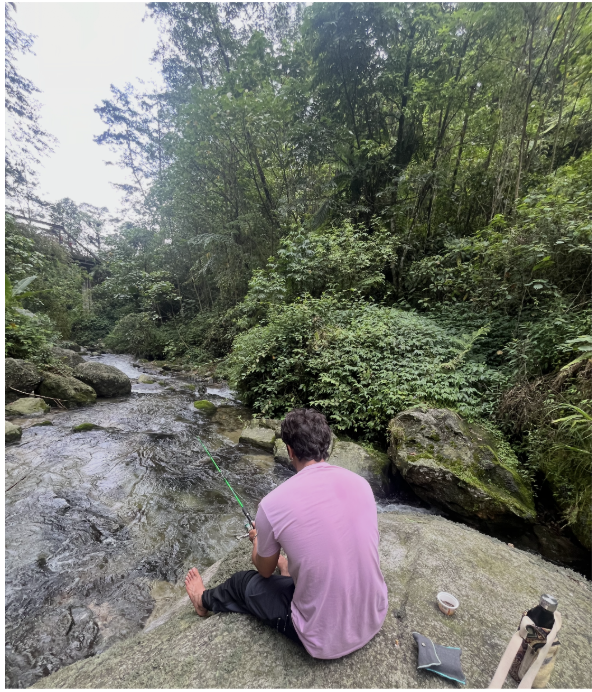
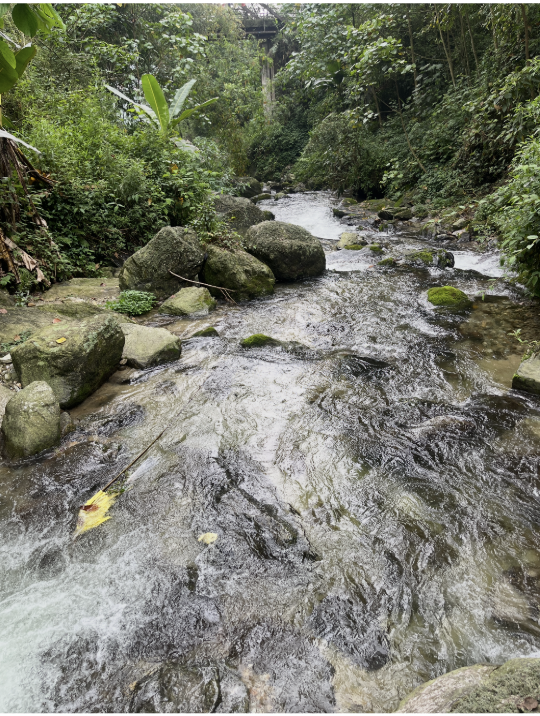
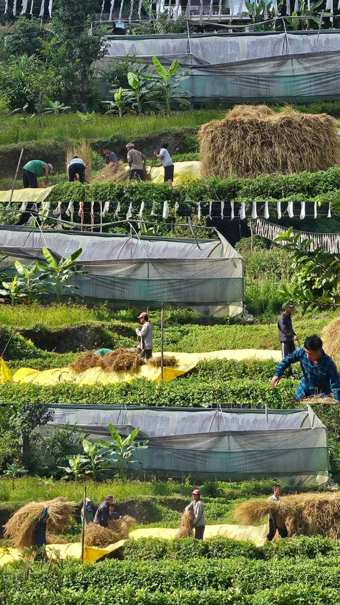
Walk beside the river. Sit in the orchard. Fishing as patience and stillness, not sport. The trek from monastery into the sanctuary as the longest exhale. The village needs more flowers.
In Lepcha cosmology the river is inhabited by lu - water spirits. The forest asks for a ceremony honouring the bamboo's spirit before cutting. When a guest is told they may not pluck from the orchard without asking, they are not given a rule - they are given a teaching.
The land is a relationship, not a resource.
The riverside and fishing area will be cleared and declared sacred - protected by meaning, not only by rules.

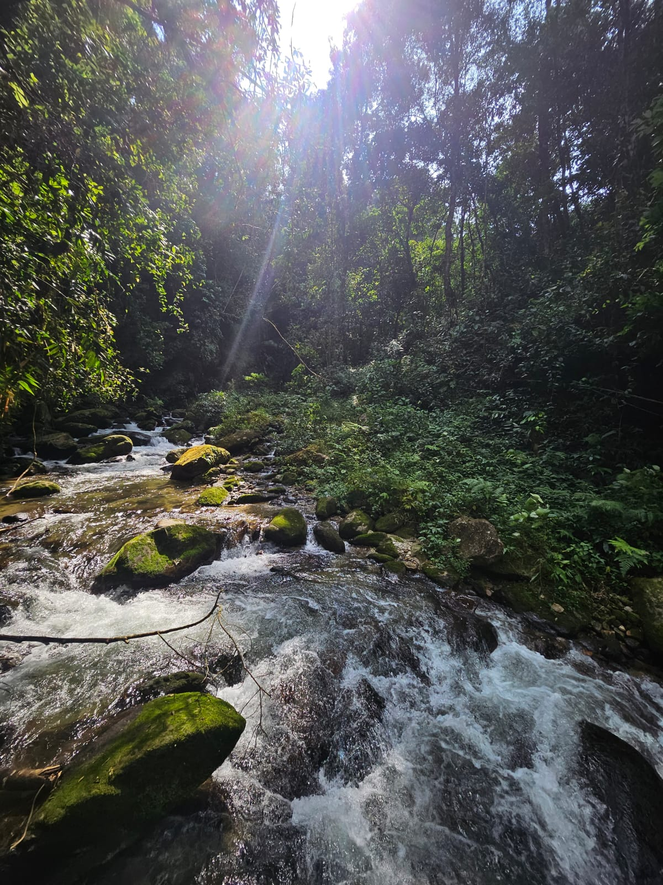
Chapter VIII
The Two Registers
The whole village rests on one contrast it must learn to hold:
- The Unbecoming Space, the Making Space, the Gathering Hall.
- Sound, colour, release.
- Placed so the noise moves into the landscape, never into the quiet.
- The monastery, the meditation room, the cremation ground, the orchard, the riverside.
- And small silence spaces scattered through the village, where people sit together without speaking.
A guest moves between the two across a day. The movement itself is the practice.
The Whole of It